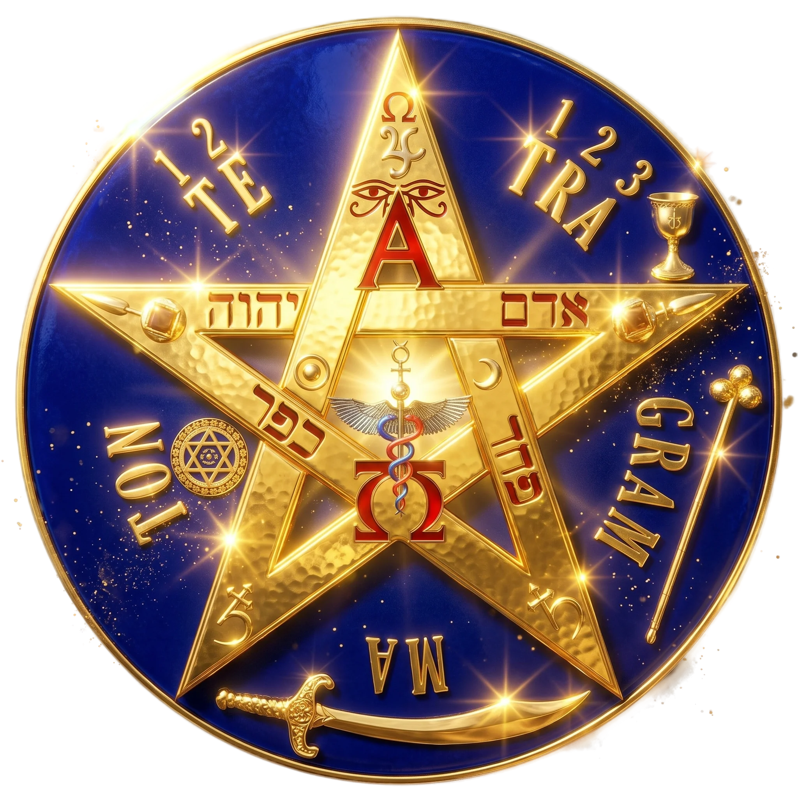
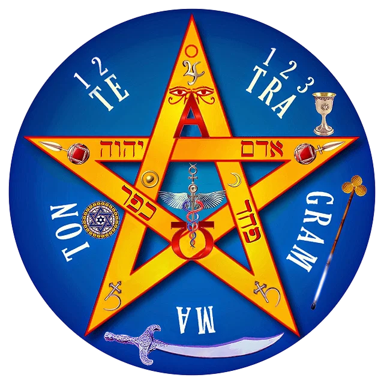

Consultor Espiritual Virtual con Inteligencia Artificial
Para obtener una guía interactiva inmediata, ponemos a tu disposición nuestro propio modelo experto de inteligencia artificial esotérica. Este asistente avanzado está programado para analizar la naturaleza de tus bloqueos vitales, financieros o sentimentales en tiempo real, ofreciéndote una orientación preliminar precisa antes de acudir a los altares mayores. Experimenta un análisis tecnológico inmediato diseñado para dar claridad a tu mente y guiar tus pasos hacia la solución correcta.
➔ Iniciar Consulta con Inteligencia Artificial
Trabajos de Brujería y Hechicería para Todo Pedimento
Cuando los caminos se cierran por completo y las soluciones mundanas fracasan, es imperativo recurrir al Altar Mayor. Si te enfrentas a encrucijadas críticas que demandan justicia esotérica, blindajes de protección inquebrantable o la resolución de un pedimento de alta complejidad, necesitas la guía de una entidad de conocimiento real. No existen los resultados fortuitos, sino las fuerzas alineadas bajo un propósito claro. Esta división se encarga exclusivamente de estructurar ritos ceremoniales personalizados y solemnes, orientados a someter las circunstancias adversas y devolverte el dominio absoluto sobre tu destino y bienestar financiero.
➔ Visitar Portal Babalawo San BenitoLimpiezas Espirituales con Protocolo "Remolino de Fuego"
Para aquellos estados de afectación severa, estancamiento crónico o bloqueos destructivos que no han cedido ante limpiezas comunes, se requiere un impacto de transmutación radical. El Protocolo Remolino de Fuego representa una intervención esotérica de élite y máxima potencia. Este proceso actúa desintegrando por completo las estructuras parasitarias, larvas energéticas, envidias densas o cualquier trabajo de magia oscura que intente vulnerar tu entorno. Mediante la fuerza purificadora del elemento ígneo, se ejecuta un corte definitivo de influencias negativas para restablecer la fuerza vital y la claridad existencial de manera inmediata.
➔ Activar Protocolo Remolino de Fuego
Limpiezas Energéticas y Espirituales Tradicionales
El desgaste cotidiano, el contacto con ambientes cargados y las tensiones del entorno acumulan una bruma astral que nubla las decisiones y frena el bienestar. Si tu situación requiere una restauración armoniosa y un diagnóstico certero de tu estado actual, la Sanación Tradicional Completa es la vía idónea. Utilizando el profundo simbolismo del huevo ritual para la absorción de impurezas, la velación como faro de transmutación y una sesión de videncia pura, limpiamos tu campo áurico con extrema delicadeza. Es el tratamiento ideal para reiniciar tus flujos de energía, disipar la confusión mental y obtener un panorama claro y certero para tu vida.
➔ Ir a Limpia Espiritual TradicionalDeclaración de Transparencia e Idoneidad Profesional (EEAT / YMYL)
Este sitio web (Antonapr.com) opera bajo estrictos criterios de responsabilidad y supervisión administrativa. Reconocemos que las consultas relacionadas con el equilibrio energético, el bienestar espiritual y la guía esotérica impactan la tranquilidad y estabilidad emocional de nuestros usuarios. Por ello, este directorio no realiza prácticas rituales de forma directa ni centraliza fondos; su única función es validar, auditar la vigencia técnica y derivar el tráfico hacia tres plataformas independientes, legítimas y con metodologías claramente diferenciadas, así como proveer herramientas automatizadas de consulta preliminar. La elección de cada servicio es responsabilidad del usuario, garantizando un entorno seguro y libre de duplicidad operativa.